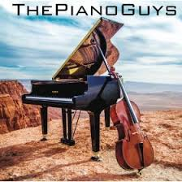
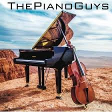

Caminar es mucho más que un simple ejercicio para mÃ. Es una forma de conectar con la naturaleza, despejar la mente y reflexionar sobre la vida. Cada paso es una oportunidad para descubrir nuevos paisajes, disfrutar del aire fresco y sentirme en paz conmigo mismo. Suelo caminar más de 5 kilómetros al dÃa, y cada uno de ellos me llena de energÃa y vitalidad.
En 2017 tuve la oportunidad de realizar el Camino de Santiago, una experiencia transformadora que me permitió conectar con personas de todo el mundo y descubrir la belleza de la España rural. ¡Fue un viaje inolvidable!
La lectura es mi refugio personal, un espacio donde puedo escapar de la rutina y explorar mundos infinitos. Disfruto de novelas que me transportan a otras épocas y lugares, libros de historia que me permiten comprender el pasado y textos de espiritualidad católica que alimentan mi alma.
La música y el cine son otras de mis grandes pasiones. Me encanta descubrir nuevos artistas y bandas sonoras que me emocionan, asà como disfrutar de buenas pelÃculas que me hacen reflexionar sobre la vida.
 
